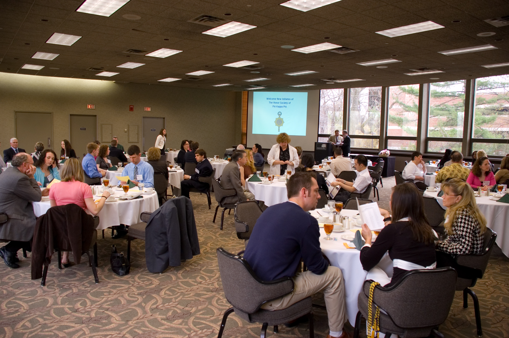
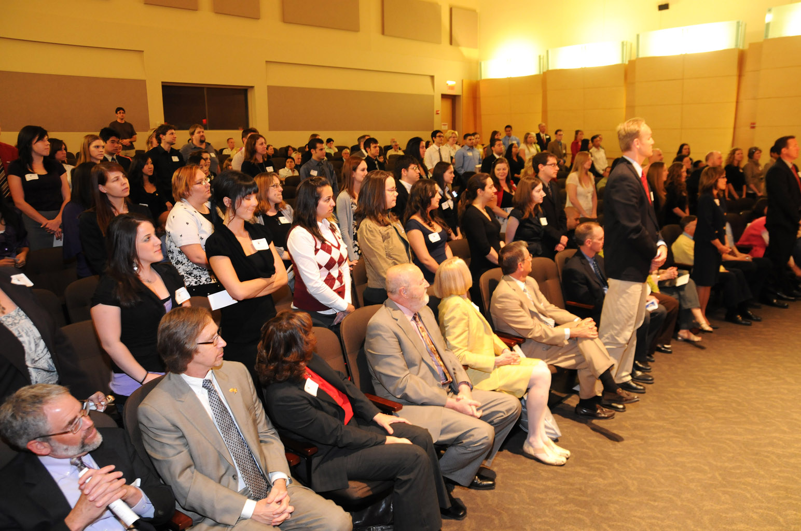
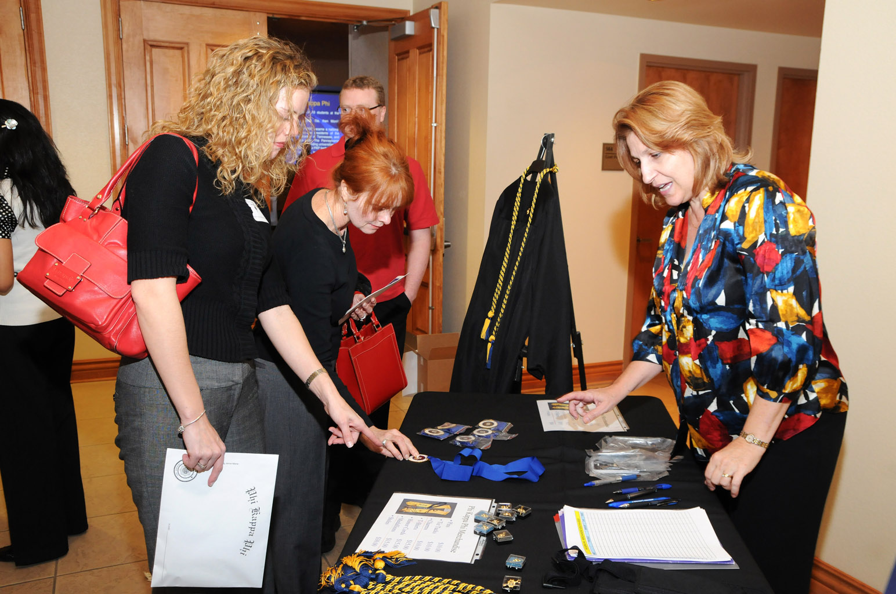
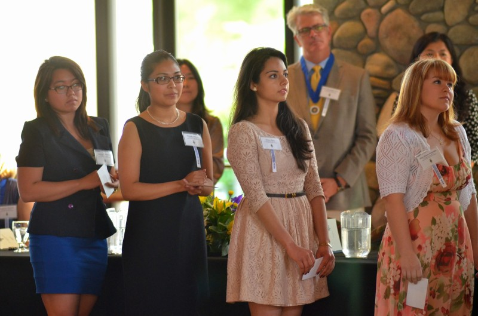
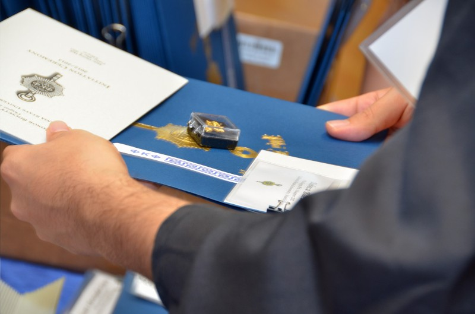
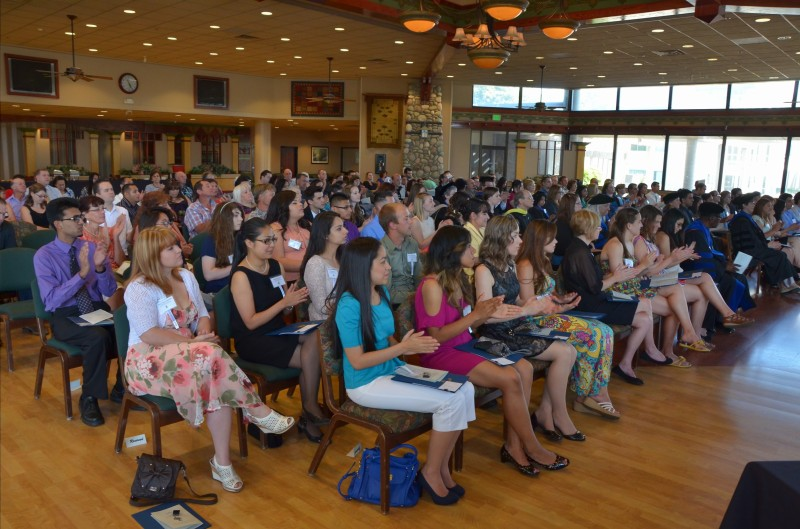

Prior to 2020, university chapters held in-person ceremonies to induct new members. With campus closures and challenges associated with COVID-19 and physical distancing requirements, the Society has created opportunities to celebrate your achievements and socialize with your class of new inductees virtually. We host inspirational speakers and provide an overview of why you were invited to join and how you can benefit from engagement, scholarship, networking, and other professional opportunities. We want to celebrate you and all you have achieved!
Text
Past Induction Festivities





